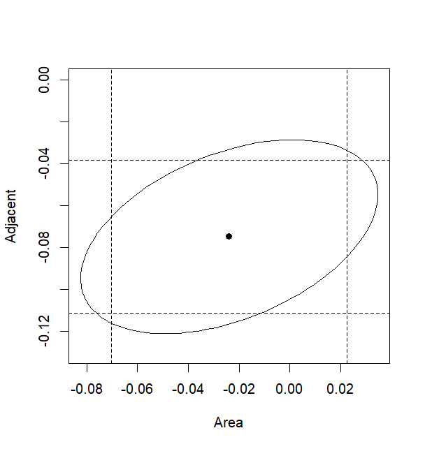

回归分析第4讲——基于R语言实现线性回归
这一讲为实践内容，我们将学习如何使用R语言建立和拟合线性回归模型，并对模型和参数进行假设检验。
本讲默认读者已经了解R语言的基本语法，能够在自己的电脑中成功编写和运行R脚本。
一、线性回归的建立与解读
1.1 示例数据集介绍
本讲所使用的数据集是加拉帕戈斯群岛的物种数据，需要首先下载faraway包，并导入数据集gala：
> install.packages("faraway") |
数据解读：数据集每行代表一座岛屿（共30座），列分别代表物种数量(Species)、岛屿面积(Area)、最高高地(Elevation)、最近岛屿距离(Nearest)、到Santa Cruz岛的距离(Scruz)、邻接岛面积(Adjacent)。所有列均为连续变量。
gala[,-2]表示我们不使用原始数据的第2列。
针对这个数据集，我们的研究目标是：岛屿的物种数量到底与什么因素有关？
考虑到数据集中响应变量和自变量都是连续变量，故考虑以Species为响应变量、其余列为自变量，使用线性回归来构建模型。
1.2 建立线性回归模型
在R语言中建立线性回归模型很容易，你可以直接使用R内置的lm()函数。lm()函数的基本语法为：
myfit <- lm(formula, data) |
其中data表示输入数据，一般是数据框形式；formula表示拟合的公式，也就是规定自变量和响应变量，形如：
Y ~ X1 + X2 + ... + Xk |
formula中可使用以下符号：
| 符号 | 用途 |
|---|---|
~ |
分开响应变量与自变量，左边为响应变量，右边是自变量 |
+ |
分隔自变量 |
: |
定义自变量组成的交叉项 |
* |
定义自变量的所有单独项和交叉项 |
^ |
定义幂次 |
. |
简写，等价于数据框中所有非响应变量 |
- |
删除某一个自变量 |
-1 |
删除截距项 |
I() |
将某一自变量组合作为一个整体来考察 |
func |
可以对变量使用数学函数，如log(y)~x |
我们按照构建模型的语法，建立线性回归，并保存在变量lmod中。summary()可以帮我们优化输出这个模型的各项结果：
> lmod <- lm(Species ~ Area + Elevation + Nearest + Scruz + Adjacent, data = gala) |
模型的输出结果非常多，不要着急，我们会逐一讲解。
1.3 模型拟合参数解读
我们先看回归系数部分，也就是Coefficients部分：
Coefficients: |
coefficients部分是一个类似表格的格式，每一行代表每一个自变量的拟合信息，其中第一行的Intercept就是截距项。lm()默认模型带有截距项，如果你不想要截距项，就可以把公式改成Y ~ X1 + X2 + ... + Xk - 1。
Estimate列代表每一个自变量对应的回归系数的估计值，也就是，截距项代表截距的大小。为了展示回归系数的估计过程，我们尝试自己来实现一下。首先我们调用model.matrix()函数来生成设计矩阵，并保存响应变量：
> x <- model.matrix( ~ Area + Elevation + Nearest + Scruz + Adjacent, data = gala) |
接下来我们根据正规方程来求解回归系数。为了避免回归系数的解可能不唯一，我们调用成熟的solve()函数来求解：
> solve(crossprod(x,x),crossprod(x,y)) |
crossprod()是叉乘函数，在这里表示矩阵乘法；solve()是一个求解器，solve(A,b)表示求解的解，这里正好对应正规方程的解。可以看到，求解的结果和lm()拟合的结果一致。
Std.Error列代表回归系数估计值的标准差，也就是。根据理论知识，如果假定残差服从正态分布，那么就有。因此，如果得到了残差方差的估计值，且设计矩阵已知，就可以计算回归系数的标准差了：
根据公式来看，我们要解决两个问题，一个是方差/标准差参数，另一个是。
方差参数其实已经在程序输出结果中体现，请在输出结果中查看这一行：
Residual standard error: 60.98 on 24 degrees of freedom |
这一行是残差标准差，也就是残差方差的平方根。如果你想直接获得这个数值，也可以直接访问：
> lmodsum <- summary(lmod) |
可以通过cov.unscaled的值获得：
> xtxi <- lmodsum$cov.unscaled |
最后我们取对角元开平方根，再和前面的标准差相乘，就得到了，可以看到和Std.Error列的值一模一样：
> sqrt(diag(xtxi))*lmodsum$sigma |
当然，残差方差估计值也可以自己计算。我们已经知道残差方差的估计值为，这里表示残差，那么分子就是残差平方和，可以通过deviance()函数获得；而可以通过df.residual()函数来获得，再开平方根就能获得结果了：
> sqrt(deviance(lmod)/df.residual(lmod)) |
剩下还有两列，分别是 t value和Pr(>|t|)，以及Signif. codes部分。这些内容和回归系数的假设检验有关，我们在下面第2节展开说明。
1.4 其他输出解读
除了回归系数，我们再看看别的输出。
Call: |
Call输出拟合的模型结构，你可以检查你的输入和程序实际使用的模型是否一致。
Residuals: |
Residuals输出模型的残差统计，模型会对每一个样本计算其残差值，然后将所有残差值进行汇总统计。上述各列从左至右依次为：最小值、第一分位数、中位数、第三分位数，最大值。
Multiple R-squared: 0.7658, Adjusted R-squared: 0.7171 |
这一行涉及的内容我们还没有在理论知识中介绍到，但是简单来说就是反映数据拟合好坏的一个指标，称为决定系数。输出中Multiple R-squared就代表了决定系数，这个值是在0到1范围内波动的连续值，如果该值越靠近1，说明数据的分布越接近模型的结构，拟合效果越好；反之如果该值越靠近0，说明这个数据不太能用这个模型来解释，拟合效果差。
有关决定系数方面的理论知识将在下一讲进行介绍。
F-statistic: 15.7 on 5 and 24 DF, p-value: 6.838e-07 |
这一行是关于统计量以及值，在本讲第2节就会介绍。
二、线性回归的假设检验与预测
2.1 模型显著性检验
模型显著性检验，即检验模型结构是否成立，也即检验我们选择的自变量中是否存在重要变量。原假设为：
如果模型显著，则说明至少有一个回归系数/自变量是重要的。
那接下来要做的就是构建原假设满足的模型。如果原假设成立，那么模型只剩下截距项/常数项，这样的模型我们又称为零模型(Null Model)。在R语言中这样构建：
> nullmod <- lm(Species ~ 1, gala) |
如果要对比零模型和我们的拟合模型，需要进行检验。这里我们使用anova()函数，该函数可以接受两个模型，并通过构建方差分析表来进行检验：
> anova(nullmod, lmod) |
你或许不知道我说的方差分析表是什么，这不是你的错。方差分析表源自于方差分析，是我们后面要学习的特殊回归模型，不过你现在不必知道是什么，你只需知道anova()函数可以对两个模型进行检验。
输出结果中，Model 1和Model 2分别代表零模型和拟合模型，对于下方的数据表我们只需要关心F列和Pr(>F)列。这里的F列就是指我们在理论知识中构造的统计量的值，而Pr(>F)列就是p值。可以看到，这里的输出结果和之前的summary结果是一样的：
F-statistic: 15.7 on 5 and 24 DF, p-value: 6.838e-07 |
p值后面还有几个“*”，这代表p值达到的显著性水平，不同的“*”个数对应下面的Signif. codes所指的显著性水平。
2.2 回归系数显著性检验
对模型整体进行检验之后，我们还想进一步知道每一个回归系数是否显著不为0，也就是检验：
根据理论知识，我们可以对每一个回归系数构造统计量：
通过检验统计量就可以知道回归系数的显著性了。那么1.3小节中的t value列其实就是这个值，你可以试试将Estimate列和Std. Error列的值对应相除，就可以得到t value列的值。同时，Pr(>|t|)列就代表对应的p值，其后面的“*”代表p值达到的显著性水平，不同的“*”个数对应下面的Signif. codes所指的显著性水平。
当然，我们还可以仿效2.1小节的方法，自己构建一个更小的模型，然后通过anova()函数进行检验。比如，我想检验Area项的系数是否显著，就可以这样做：
> lmods <- lm(Species ~ Elevation + Nearest + Scruz + Adjacent, gala) |
可以看到，Model 1相对于Model 2少了一项Area，两个模型检验发现值不显著，就说明Area项对种群数量的贡献不显著。
除了对每个回归系数进行显著性检验，我们还可以仿照上面的方法进行更多花式检验，例如我想检验，我们就可以这样构建：
> lmods <- lm(Species ~ Nearest + Scruz + Adjacent, gala) |
然后跟原来的拟合模型进行对比，得出值。
又或者我只想检验，那么可以这样构建：
> lmods <- lm(Species ~ I(Elevation + Area) + Nearest + Scruz + Adjacent, gala) |
通过I()将两个自变量看成一个整体来检验，如果差异显著，说明这两个变量的回归系数不同；如果没有显著差异，说明这两个回归系数的效应相同。
你还可以自己开发各种检验方法来验证你的结论，增强模型说服力。
2.3 回归系数的置信区间
在对回归系数做完检验之后，我们还需要估计置信区间。如果你只想对每一个回归系数单独计算置信区间，那我们可以根据检验来构建置信区间，即：
对于模型：
> lmod <- lm(Species ~ Area + Elevation + Nearest + Scruz + Adjacent, data = gala) |
我们可以利用内置的confint()函数对每一个自变量计算置信区间（包括截距）：
> confint(lmod) |
如果要给出同时置信区间，我们不能使用confint()函数了。但是，似乎没有现成的包可以使用，只能根据我们学习的定义来计算。这里我们不展开，我们先通过绘制两个变量单独的置信区间以及两个变量的同时置信区间来体会二者的区别。我们以Area（第2个参数）和Adjacent（第6个参数）为例，画出二者单独的置信区间（虚线）以及同时置信椭球（实线）：
# install.packages("ellipse") |

可以看到，尽管两个变量单独的置信区间可以形成一个方形区域，但是同时置信区间并不是这样，二者相互制约，控制着总体的错误率，从直观上我们看到了单独的置信区间和同时置信区间是有所区别的。
2.4 线性回归的预测
最后我们来看如何利用拟合的模型完成预测。这里我们临时使用一个新的数据集——fat，该数据收录了252名男性身体的13个参数，包括年龄、身高、体重等，并依据Brozek方程来估计他们的体脂率。我们仍然使用线性回归模型来拟合：
> data(fat, package = "faraway") |
具体的拟合效果我们不再分析，现在我们只关注如何使用该模型进行预测。我们分别取每个自变量的中位数作为一个新的样本点，预测其brozek值：
> x <- model.matrix(lmod) |
要实现预测，我们直接将这个输入乘以拟合的系数即可，其中coef()函数可以返回模型的参数向量：
> y0 <- sum(x0*coef(lmod)) |
当然，这种方法比较简陋，一个更成熟的方法是使用predict()函数：
> predict(lmod, new=data.frame(t(x0))) |
除了点预测，我们还对区间预测感兴趣。predict()函数可以输出预测区间：
> predict(lmod, new=data.frame(t(x0)), interval = "prediction") |
lwr是区间预测下界，upr是区间上界。
除了预测区间，我们还可以给出新的样本点的置信区间：
> predict(lmod, new=data.frame(t(x0)), interval = "confidence") |
预测区间和置信区间有什么区别？
预测区间是指在这个x值下，某个新样本的y的可能值，它的区间更宽，考虑了估计均值的不确定性和随机误差；
置信区间是指在这个x值下，y的真实值的平均值，它的区间更窄，只考虑估计均值的不确定性。
总结来说，预测区间考虑的是在某个x值下观测值取值的区间，置信区间考虑的是在某个x值下观测值取值的均值的区间。